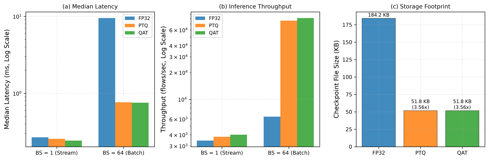
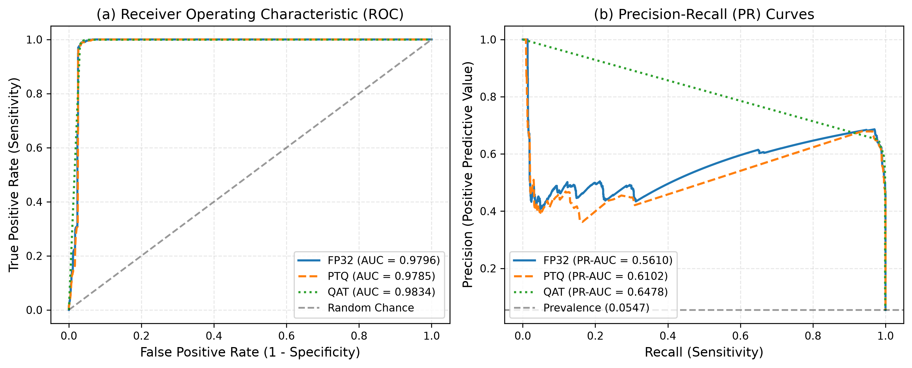
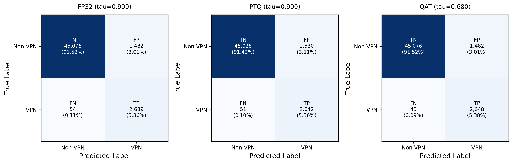
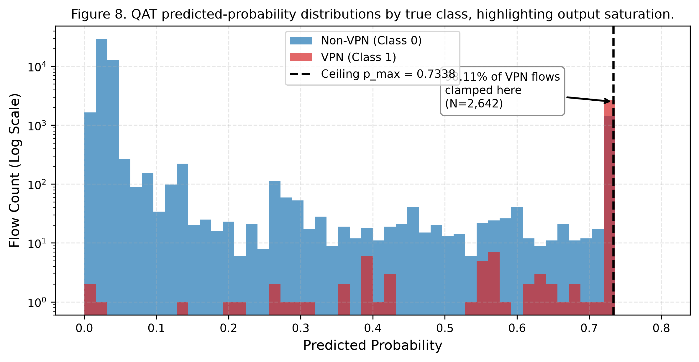
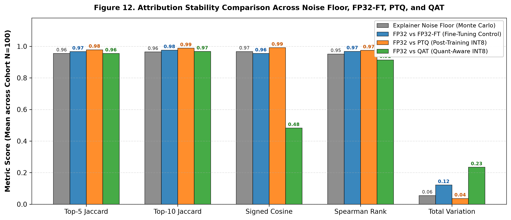
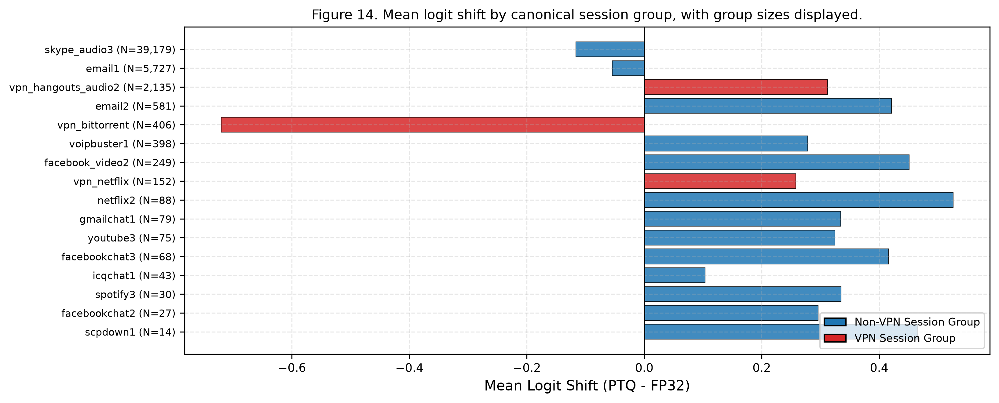
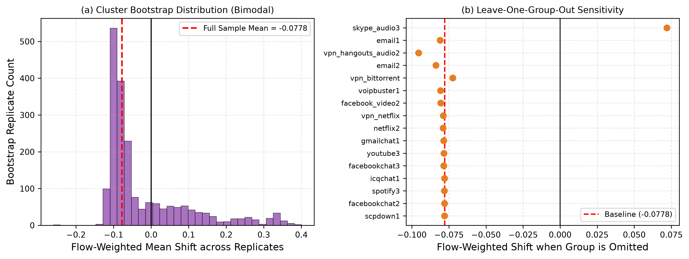

Abstract—Compressing deep neural network classifiers from 32-bit floating-point (FP32) to 8-bit integer (INT8) representations is standard practice for deploying encrypted traffic inspectors on resource-constrained edge hardware. Because post-quantization accuracy losses are typically small and negligible, often below one percentage point, practitioners assume the model's internal decision logic is preserved. We test that assumption directly. Using the ISCX VPN-NonVPN 2016 benchmark (339,009 bidirectional flows from 140 captures, partitioned into 106 leakage-free canonical session groups), we train a compact 1D Convolutional Neural Network (44,129 parameters) and compress it via both static Post-Training Quantization (PTQ) and Quantization Aware Training (QAT) under the PyTorch QNNPACK backend. We then apply KernelSHAP, a perturbation-based, model-agnostic attribution method compatible with discrete INT8 weights to 100 stratified test flows, benchmarking quantization-induced attribution drift against a multi-seed explainer noise floor. PTQ preserves dominant feature rankings almost exactly: 95 of 100 flows share identical Top-5 feature sets (Jaccard = 0.9786, signed cosine similarity = 0.9918). A paired Wilcoxon signed-rank test detects a small positive rank shift, but the median Total Variation displacement is only +0.0049. QAT tells a different story. Cosine similarity between FP32 and QAT attributions collapses to 0.4830 (\(p < 10^{-17}\); vs. 0.9554 for an unquantized fine-tuning control), and unsigned 8-bit output quantization imposes a hard probability ceiling of 0.7338 that causes complete minority-class detection failure (\(F_1 = 0.0000\) on the full 49,251-flow test set) when practitioners reuse the original decision threshold, recoverable only through explicit post-quantization calibration. Batched INT8 inference reaches 76–82 k flows/s which is 12 times over FP32; single-packet streaming yields only 1.05 times. These findings establish that predictive accuracy alone is an insufficient proxy for explainability fidelity after quantization.
In this section, we evaluate the computational efficiency, predictive classification performance, probability calibration dynamics, explainability fidelity, and clustered statistical robustness of 32-bit floating-point (FP32), an unquantized Fine-Tuned control baseline (FP32-FT), static Post-Training Quantized (INT8-PTQ), and Quantization-Aware Trained (INT8-QAT) models under the PyTorch QNNPACK execution engine. All evaluations are conducted on the held-out test partition (\(N = 49,251\) bidirectional flows across 16 canonical capture groups), ensuring zero cross-split session contamination.
We evaluate physical execution metrics on edge hardware to determine whether 8-bit integer quantization delivers concrete latency and throughput benefits for network traffic inspection. Profiling was conducted on an Apple Silicon ARM64 processor (macOS 15.1) using the PyTorch QNNPACK execution engine. All benchmarks reflect 500 timed evaluation passes following 50 warm-up runs. Table I summarizes the measured checkpoint footprints, per-flow latencies, and throughput rates across streaming and batched operational modes.
| Metric | FP32 | INT8-PTQ | INT8-QAT |
|---|---|---|---|
| Model Checkpoint Size | 184.24 KB | 51.77 KB | 51.77 KB |
| Compression Ratio | 1.00× | 3.56× | 3.56× |
| L1 Data Cache Residency | Exceeds 64 KB | Fully Fits | Fully Fits |
| Single-Flow Streaming Inspection (\(B = 1\)) | |||
| Median Latency | 0.267 ms | 0.255 ms | 0.242 ms |
| Latency Speedup | 1.00× | 1.05× | 1.10× |
| Throughput (flows/s) | 3,439 | 3,571 | 3,745 |
| Micro-Batched Execution (\(B = 64\)) | |||
| Median Latency | 9.503 ms | 0.764 ms | 0.755 ms |
| Latency Speedup | 1.00× | 12.44× | 12.59× |
| Throughput (flows/s) | 6,387 | 76,265 | 81,552 |
| Throughput Speedup | 1.00× | 11.94× | 12.77× |

Quantization compresses the serialized model checkpoint from 184.24 KB to 51.77 KB, yielding a 3.56× storage reduction. This size reduction has immediate microarchitectural implications. Many embedded CPU architectures allocate 64 KB for L1 data cache per core. While the 184.24 KB floating-point weights exceed this limit and trigger external memory bus traffic, the 51.77 KB quantized parameter tensor fits entirely within L1 data cache. Memory access stalls during repetitive filter operations are substantially reduced.
The timing measurements reveal an operational division between streaming packet inspection and batched traffic triage:
Streaming Inspection (\(B = 1\)): When classifying isolated flows one by one, integer quantization yields modest latency gains. Median per-flow latency decreases from 0.267 ms in FP32 to 0.255 ms in PTQ (1.05× speedup) and 0.242 ms in QAT (1.10× speedup). Processing throughput increases only slightly, from 3,439 to 3,745 flows/s.
This modest gain stems from framework execution limits. The 1D-CNN contains 44,129 parameters, requiring approximately \(8.8 imes 10^4\) multiply-accumulate operations per flow. On an ARM processor operating at gigahertz clock rates, the theoretical compute time for these operations is under one microsecond. Yet the measured execution time is roughly 250 microseconds. Over 99% of wall-clock time at batch size 1 is absorbed by Python runtime interpretation, tensor memory allocations, operator dispatch, and quantization scale conversions. Because arithmetic execution accounts for less than 1% of latency, replacing floating-point operations with integer math produces negligible savings in streaming mode.
Micro-Batched Triage (\(B = 64\)): When traffic can be accumulated into small buffers of 64 flows, framework invocation costs are amortized across the batch, shifting execution into a compute-bound state. In this regime, INT8 quantization accelerates processing substantially. Median batch latency drops from 9.503 ms down to 0.764 ms under PTQ (12.44× speedup) and 0.755 ms under QAT (12.59× speedup). As shown in Fig. 1, this translates to an order-of-magnitude reduction in execution delay. Batched throughput scales from 6,387 flows/s in FP32 to 76,265 flows/s in PTQ (11.94× gain) and 81,552 flows/s in QAT (12.77× gain).
This 12-fold acceleration is driven by ARM NEON SIMD vectorization. ARM64 processors feature 128-bit vector registers. While a single 128-bit register holds four 32-bit floats, it packs sixteen 8-bit integers. With specialized dot-product instructions, the hardware processes four 8-bit integer multiply-accumulates into 32-bit accumulators in a single instruction cycle. In addition, INT8 reduces memory bus traffic by 75%, loading 64 weights per standard 64-byte cache line instead of 16. In streaming per-packet deployments, software overhead dominates; in batched traffic collectors, integer SIMD execution delivers the throughput necessary to inspect high-rate network backbones.
We evaluate predictive classification performance on the full held-out test partition, comprising \(N = 49,251\) bidirectional flows (2,693 true VPN flows and 46,558 true Non-VPN flows). This split reflects the operational class imbalance common in production networks, where tunneling traffic constitutes a 5.47% minority. All test flows originate from 16 canonical capture sessions that share zero session overlap with training or validation splits. Table II reports discrimination metrics across three operational perspectives: threshold-independent ranking (Panel A), validation-calibrated operating points (Panel B), and an uncalibrated scenario where the baseline threshold is transferred directly to quantized models (Panel C).
| Metric | FP32 Baseline | FP32-FT (Control) | INT8-PTQ | Δ (PTQ) | INT8-QAT | Δ (QAT) |
|---|---|---|---|---|---|---|
| Panel A: Threshold-Independent Ranking Performance | ||||||
| ROC-AUC | 0.9796 | 0.9819 | 0.9785 | -0.0012 | 0.9834 | +0.0038 |
| PR-AUC (Minority VPN) | 0.5610 | 0.6128 | 0.6102 | +0.0492 | 0.6478 | +0.0868 |
| Brier Score | 0.0585 | 0.0248 | 0.0584 | -0.0000 | 0.0237 | -0.0347 |
| Panel B: Model-Specific Validation-Calibrated Operating Points | ||||||
| Decision Threshold (τ) | 0.900 | 0.830 | 0.900 | +0.000 | 0.680 | -0.220 |
| Accuracy | 96.88% | 97.64% | 96.79% | -0.09% | 96.90% | +0.02% |
| Balanced Accuracy | 97.41% | 97.25% | 97.41% | +0.00% | 97.57% | +0.17% |
| Precision (VPN) | 64.04% | 70.77% | 63.33% | -0.71% | 64.12% | +0.08% |
| Recall (VPN) | 97.99% | 96.81% | 98.11% | +0.11% | 98.33% | +0.33% |
| F1-Score | 0.7746 | 0.8176 | 0.7697 | -0.0049 | 0.7762 | +0.0016 |
| Positive Calls (Predicted VPN) | 4,121 | 3,684 | 4,172 | +51 | 4,130 | +9 |
| True Positives / False Negatives | 2,639 / 54 | 2,607 / 86 | 2,642 / 51 | +3 / -3 | 2,648 / 45 | +9 / -9 |
| Panel C: Reused Baseline Threshold (τ = 0.900, Uncalibrated Comparison) | ||||||
| Positive Calls (Predicted VPN) | 4,121 | 1,693 | 4,172 | +51 | 0 | -4,121 |
| Accuracy | 96.88% | 94.45% | 96.79% | -0.09% | 94.53% | -2.35% |
| Balanced Accuracy | 97.41% | 64.42% | 97.41% | +0.00% | 50.00% | -47.41% |
| Precision (VPN) | 64.04% | 48.85% | 63.33% | -0.71% | 0.00% | -64.04% |
| Recall (VPN) | 97.99% | 30.71% | 98.11% | +0.11% | 0.00% | -97.99% |
| F1-Score | 0.7746 | 0.3771 | 0.7697 | -0.0049 | 0.0000 | -0.7746 |
| Missed VPN Flows (False Negatives) | 54 | 1,866 | 51 | -3 | 2,693 (100%) | +2,639 |
| Prediction Flips vs. Baseline | --- | 5.02% | 0.12% | --- | 8.37% | --- |

Threshold-Independent Ranking (Panel A): Evaluated across all potential decision thresholds, all models demonstrate strong rank ordering. ROC-AUC values span a narrow band between 0.9785 and 0.9834. However, ROC-AUC is insensitive to minority detection errors in severe class imbalance. With 46,558 true negative flows, false alarm fluctuations alter the false positive rate denominator only marginally, leaving the ROC curve near the top-left boundary.
Precision-Recall AUC (PR-AUC) provides a more direct measure of minority detection capability. As illustrated in Fig. 2, all models maintain precision well above the 0.0547 random prevalence line. Baseline FP32 scores a PR-AUC of 0.5610. PTQ improves this score to 0.6102 (+0.0492 gain), and QAT attains 0.6478 (+0.0868 gain). The unquantized fine-tuned control (FP32-FT) achieves 0.6128. Training noise introduced by fake-quantization operators during QAT acts as an effective regularizer, improving rank separation on ambiguous flows. Brier calibration scores reflect a parallel trend: QAT achieves the lowest mean squared prediction error (0.0237, compared to 0.0585 for FP32 and 0.0584 for PTQ).

Calibrated Operating Performance (Panel B): In active network deployments, an inspection engine must make hard binary decisions at a fixed threshold \( au\). When thresholds are calibrated on the independent validation split (\( au = 0.900\) for FP32, \( au = 0.900\) for PTQ, \( au = 0.680\) for QAT, and \( au = 0.830\) for FP32-FT), all architectures demonstrate viable detection accuracy, as shown in the confusion matrices of Fig. 3.
INT8-PTQ reproduces the performance of the FP32 baseline with minimal variance. At the identical operating threshold of \( au = 0.900\), PTQ achieves 96.79% accuracy (a change of \(-0.09\%\)), identical balanced accuracy of 97.41%, and 98.11% VPN recall (+0.11% gain), yielding an \(F_1\)-score of 0.7697 (compared to 0.7746 for baseline). Across the entire 49,251-flow evaluation set, PTQ induces only 57 prediction flips (0.12% of traffic), confirming that post-training quantization preserves the operational decision boundary when evaluated at the calibrated operating point.
Calibrated QAT achieves the highest balanced accuracy (97.57%) and peak recall (98.33%), correctly identifying 2,648 of 2,693 VPN flows while missing only 45 instances. Its calibrated \(F_1\)-score of 0.7762 slightly exceeds the FP32 baseline. The unquantized fine-tuned control (FP32-FT) attains the highest precision at 70.77% and an \(F_1\)-score of 0.8176, indicating that additional training epochs refine boundary precision.
The Threshold Transfer Failure (Panel C): While QAT excels when calibrated, an operational failure occurs if an edge engineer deploys the quantized model while naively reusing the floating-point threshold (\( au = 0.900\)).
Under PTQ, threshold reuse remains benign: positive calls increase by only 51 flows (4,172 vs. 4,121), balanced accuracy stays at 97.41%, and the \(F_1\)-score remains 0.7697. For QAT, however, reusing the baseline threshold triggers a complete detection blackout. The uncalibrated QAT model emits zero positive calls across all 49,251 test flows (down from 4,121 positive calls in the baseline).
VPN recall falls to 0.00%, the \(F_1\)-score drops to 0.0000, and balanced accuracy collapses to 50.00% (the level of random guessing). Every single VPN flow in the test set is missed: 2,693 false negatives out of 2,693 true positive flows. A total of 4,121 flows flip from positive to negative, altering classifications across 8.37% of all monitored traffic.
This result reveals a practical pitfall. In Panel A, QAT achieved the highest ROC-AUC (0.9834) and the highest PR-AUC (0.6478). Yet under direct threshold transfer in Panel C, it suffers total operational failure. Threshold transferability cannot be assumed when deploying quantized models, and post-quantization threshold calibration on validation data is strictly required.
The complete minority-class failure of the QAT model under the uncalibrated baseline threshold (\( au = 0.900\)) is an arithmetic artifact of integer serialization rather than a failure of representation learning. While threshold-independent evaluations confirm that QAT separates traffic classes effectively (PR-AUC = 0.6478, ROC-AUC = 0.9834), the runtime conversion of the network bounds its dynamic range.
Under the QNNPACK execution engine on ARM64 hardware, the output linear layer (fc2) serializes into an unsigned 8-bit quantized representation with integer states \(q \in \{0, 1, \dots, 255\}\). The runtime maps these discrete values back to real-valued logits via uniform affine dequantization:
where the scale factor \(s = 0.02535125\) and zero-point offset \(zp = 215\) are fixed during calibration.
Because the quantized output cannot exceed the maximum unsigned byte value (\(q_{\max} = 255\)), the reachable pre-sigmoid logit is strictly bounded from above:
Passing \(z_{\max}\) through the logistic sigmoid activation \(\sigma(z) = (1 + e^{-z})^{-1}\) establishes an absolute probability ceiling:
No network input, regardless of how distinctive its packet features may be, can produce an output probability exceeding 0.733812 under this serialized operator.

Evaluating all 49,251 test flows reveals the direct operational consequence of this mathematical bound. Exactly 4,070 flows saturate at \(p_{\max} = 0.73381203\). Of these saturated instances, 2,642 are true VPN flows, representing 98.11% of the entire test VPN population (2,642 of 2,693 flows). Nearly all positive flows in the test partition pile up against this ceiling. As shown in Fig. 4, the probability bins in \((0.74, 1.00]\) are completely vacant. Applying any operational threshold \( au > 0.7338\) trivially yields zero positive detections, producing an \(F_1\) score of exactly 0.0000.
Static PTQ avoids this limitation. It maintains an unconstrained output projection spanning pre-sigmoid logits from \(-7.278\) to \(+10.398\), reaching probabilities up to 0.999969 with zero clamped flows. Recalibrating the QAT operating threshold on validation data (\( au^* = 0.680 < p_{\max}\)) successfully restores peak detection performance (\(F_1 = 0.7762\), recall = 98.33%). Even so, saturation destroys confidence gradation among positive calls: 98.11% of detected VPN flows receive the exact same probability score, preventing network operators from ranking alerts by confidence.
Top-line classification accuracy indicates whether a compressed model reaches the correct label, but it does not reveal how the model reaches that label. If quantization alters the input features that drive classification, an operator inspecting post-hoc explanations may rely on justifications that no longer reflect the true decision path.
To audit explanation stability, we apply KernelSHAP to pre-sigmoid logits across a stratified evaluation cohort of \(N = 100\) held-out test flows (50 VPN, 50 Non-VPN). The explainer runs with 150 coalition evaluations per flow against 50 background reference flows sampled from the training partition. All zero-padding tokens are masked so that attribution values reflect only active packet bytes.
Attribution drift is measured across four complementary dimensions: Top-\(k\) Intersection-over-Union (\(IoU_k\)), Total Variation Distance (\(TV\)), Signed Cosine Similarity (\(S_c\)), and Spearman Rank Correlation (\(r_s\)).
Because sampling-based explainers contain stochastic variance, evaluating drift requires an empirical reference boundary. We establish this Explainer Noise Floor by executing KernelSHAP across three independent random seeds on the unchanged FP32 baseline model. This boundary captures the variance of the estimator itself: \(IoU_5 = 0.9553 \pm 0.1829\), \(IoU_{10} = 0.9648 \pm 0.1592\), \(TV = 0.0553 \pm 0.1588\), \(S_c = 0.9676 \pm 0.1450\), and \(r_s = 0.9516 \pm 0.1666\). Metric shifts within these intervals cannot be distinguished from explainer sampling noise.
To isolate the cause of attribution changes during quantization-aware training, we also evaluate an unquantized fine-tuning control (FP32-FT). This control model is trained with the exact same 5-epoch AdamW schedule (\(lr = 10^{-4}\)) as QAT, but retains full 32-bit floating-point weights and activations without quantization layers.
| Condition / Comparison | Top-5 IoU | Top-10 IoU | Total Variation (\(TV\)) | Signed Cosine (\(S_c\)) | Spearman (\(r_s\)) |
|---|---|---|---|---|---|
| Combinatorial Random Chance | 0.0220 | 0.0426 | --- | 0.0000 | 0.0000 |
| Explainer Noise Floor (FP32 Multi-Seed) | \(0.9553 \pm 0.1829\) | \(0.9648 \pm 0.1592\) | \(0.0553 \pm 0.1588\) | \(0.9676 \pm 0.1450\) | \(0.9516 \pm 0.1666\) |
| FP32 vs. FP32-FT (Fine-Tuning Control) | \(0.9669 \pm 0.1375\) | \(0.9762 \pm 0.1169\) | \(0.1219 \pm 0.1137\) | \(0.9554 \pm 0.0953\) | \(0.9687 \pm 0.1092\) |
| FP32 vs. INT8-PTQ | \(0.9786 \pm 0.0970\) | \(0.9887 \pm 0.0650\) | \(0.0369 \pm 0.0620\) | \(0.9918 \pm 0.0394\) | \(0.9749 \pm 0.0592\) |
| FP32 vs. INT8-QAT | \(0.9553 \pm 0.1841\) | \(0.9679 \pm 0.1416\) | \(0.2346 \pm 0.1908\) | \(0.4830 \pm 0.3449\) | \(0.9140 \pm 0.1838\) |

Table III and Fig. 5 report the quantitative attribution comparisons across the test cohort. The measurements establish four primary findings:
1) PTQ Preserves Baseline Logic: Static PTQ maintains near-perfect alignment with the uncompressed model. In 95 of the 100 test flows, PTQ selects the exact same Top-5 features as the FP32 baseline (\(IoU_5 = 0.9786 \pm 0.0970\)). Directional similarity remains high at \(S_c = 0.9918 \pm 0.0394\), and attribution redistribution is low (\(TV = 0.0369 \pm 0.0620\)). A paired Wilcoxon signed-rank test against the noise floor detects a small rank displacement (\(W = 1506.0\), \(p = 0.000459\)), but the median change in Total Variation distance is minimal (\( ext{median } \Delta TV = +0.0049\)). For static quantization, explanations generated from the uncompressed model transfer reliably to the quantized deployment.
2) Causal Disentanglement via FP32-FT: A key question is whether attribution changes in QAT originate from parameter fine-tuning or from discrete quantization constraints. The FP32-FT control resolves this question. Without quantization layers, fine-tuning preserves directional alignment (\(S_c = 0.9554 \pm 0.0953\)), tracking the noise floor (0.9676) and PTQ (0.9918). Feature selection stability remains equally high (\(IoU_5 = 0.9669 \pm 0.1375\), \(IoU_{10} = 0.9762 \pm 0.1169\)). Because gradient updates in floating point do not distort directional attributions, retraining alone cannot account for the collapse observed in QAT. The restructuring is caused directly by integer quantization and the gradient approximations of the Straight-Through Estimator (STE).
3) Directional Collapse Under QAT: While QAT retains broad feature overlap (\(IoU_5 = 0.9553 \pm 0.1841\), \(IoU_{10} = 0.9679 \pm 0.1416\)) and general rank ordering (\(r_s = 0.9140 \pm 0.1838\)), its directional alignment breaks down completely. Signed cosine similarity plunges to \(S_c = 0.4830 \pm 0.3449\) (\(p < 10^{-17}\) compared to both PTQ and FP32-FT), while Total Variation distance increases to \(TV = 0.2346 \pm 0.1908\). The model still attends to similar token regions, but it redistributes attribution weights and reverses their polarities. An explanation from the FP32 baseline cannot be assumed to describe the reasoning of the QAT model.
4) Class-Conditional Attribution Asymmetry: Evaluating drift separately across traffic classes reveals an asymmetric distribution. On Non-VPN flows, QAT shows moderate directional stability (\(S_c = 0.7996\)), with drift concentrated in magnitude scaling (\(TV = 0.3529\)). On VPN flows, directional alignment collapses almost entirely, dropping to \(S_c = 0.1665 \pm 0.2811\) (\(TV = 0.1163\)). A Mann-Whitney \(U\) test confirms that minority VPN flows experience significantly greater directional degradation than Non-VPN traffic (\(U = 278.0\), \(p = 2.12 imes 10^{-11}\)). For obfuscated tunneling traffic, the quantized model relies on fundamentally altered combinations of features to reach its classifications.
Network traffic classification datasets do not consist of independent and identically distributed (IID) samples. Flows generated during a single capture session share operating system network stacks, congestion control state, packet fragmentation boundaries, and temporal background noise. Treating each flow as an independent observation commits a pseudo-replication fallacy. When we evaluate the 49,251 held-out test flows with a standard paired \(t\)-test comparing uncompressed FP32 and INT8-PTQ pre-sigmoid logits, the test yields \(t = -38.93\) (\(p < 10^{-300}\)). Such an extreme test statistic appears to indicate that PTQ systematically depresses classification logits. However, that result is an artifact of treating clustered observations as independent trials, which deflates the estimated standard error by a factor of 56.
| Session Group | Class | Flows (\(n_k\)) | Share | Mean \(\Delta z\) | Std (\(\sigma_k\)) |
|---|---|---|---|---|---|
skype_audio3 |
Non-VPN | 39,179 | 79.55% | -0.1164 | 0.2411 |
skype_chat1b |
Non-VPN | 2,752 | 5.59% | +0.2942 | 0.2105 |
vpn_skype_audio2 |
VPN | 1,481 | 3.01% | +0.0418 | 0.1582 |
vpn_aim_chat1b |
VPN | 785 | 1.59% | +0.1891 | 0.1824 |
youtube3 |
Non-VPN | 763 | 1.55% | +0.0812 | 0.1419 |
| 11 Remaining Sessions | Mixed | 4,291 | 8.71% | +0.1200 to +0.4851 | 0.11--0.25 |
| Pooled Test Partition | Mixed | 49,251 | 100.0% | -0.0778 | 0.2618 |
To analyze the behavior across independent communication events, we group the test partition into its \(K = 16\) canonical session clusters. Table IV summarizes the sample sizes, traffic proportions, and logit shift distributions across these sessions. The partition exhibits severe volume concentration: a single session, skype_audio3, contains 39,179 flows, or 79.55% of the test cohort. In that session, PTQ reduces logits, producing a mean shift of \(-0.1164\) (\(\sigma = 0.2411\)). In contrast, 13 of the 16 canonical sessions (81.25%) exhibit positive logit shifts, ranging from \(+0.0418\) in vpn_skype_audio2 to \(+0.4851\). Only three sessions show negative mean shifts: skype_audio3, email1 (\(-0.0543\)), and vpn_bittorrent (\(-0.7204\)).

skype_audio3 (\(N=39,179\)) shifts negative, pulling the pooled flow average below zero.Figure 6 shows this divergence across sessions. Thirteen horizontal bars extend into positive territory. Yet because the top session accounts for nearly four-fifths of the evaluation data, the pooled average is dragged negative to \(-0.0778\). This dynamic represents an ecological reversal and an empirical case of Simpson's Paradox: the directional effect observed in the pooled aggregate directly reverses the effect present across most independent sub-populations.
To formalize this disparity, we define two distinct statistical estimands:
where \(\Delta z_{k,i}\) is the logit shift for flow \(i\) in session \(k\), and \(\overline{\Delta z}_k\) is the session mean shift. Estimand A evaluates the flow-weighted pooled mean. It answers an operational question: what is the net logit displacement across all flows in this specific captured dataset? Estimand B evaluates the unweighted macro-mean across sessions. It answers an inductive question: what is the expected logit displacement when deploying the model to a new, unseen network session?

skype_audio3 is selected, yielding a 95% confidence interval (\([-0.1130, +0.3275]\)) that spans zero.Because observations within the same session are statistically dependent, standard confidence intervals fail. We compute confidence intervals using cluster bootstrap resampling with replacement across the 16 canonical sessions (\(B = 2{,}000\) iterations). For Estimand A, the cluster bootstrap produces a 95% confidence interval of \([-0.1130, +0.3275]\). Because this interval spans zero, the pooled negative shift is not statistically distinguishable from zero once session clustering is recognized. For Estimand B, the cluster bootstrap produces a 95% confidence interval of \([+0.0639, +0.3562]\), which is strictly positive and bounded away from zero.
Figure 7 explains why the confidence interval for Estimand A is wide and asymmetric. The replicate distribution is distinctly bimodal rather than normal. The probability of drawing skype_audio3 at least once in a bootstrap sample of \(K = 16\) clusters selected with replacement is:
In the 64.39% of bootstrap draws where skype_audio3 appears, its 39,179 flows anchor the weighted average, centering replicate values between \(-0.11\) and \(-0.07\). In the remaining 35.61% of draws where skype_audio3 is omitted, the remaining 15 sessions govern the calculation. Because 13 of those 15 sessions have positive means, the replicate average shifts upward, forming the secondary distribution between \(+0.05\) and \(+0.35\).
A leave-one-group-out (LOGO) sensitivity analysis confirms this concentration. Removing skype_audio3 from the test partition flips the pooled flow-weighted mean from \(-0.0778\) to \(+0.0720\). In contrast, removing any of the other 15 sessions leaves the pooled mean essentially unchanged, between \(-0.0725\) and \(-0.0955\). The apparent negative logit shift is an ecological artifact of one capture file. Treating packet flows as independent observations conceals this dependency, yielding false statistical certainty. Clustered inference is required to reflect session-level dynamics in quantized traffic models.